**Cette vidéo de la chaîne Labo Des Réseaux explore et compare deux approches distinctes du montage vidéo pour une même introduction : l'utilisation des outils d'intelligence artificielle natifs de Wondershare Filmora versus le pilotage automatisé et agentique du projet de A à Z par un système externe. L'analyse met en lumière la problématique récurrente de la fragmentation des flux de travail en IA, où le passage d'une application à l'autre tend à briser le rythme et à appauvrir la créativité du créateur.**
**Le cœur de la démonstration repose sur un tutoriel pratique et détaillé au sein de Filmora, illustrant comment optimiser drastiquement le temps de post-production. Le créateur y détaille l'importation des rushs, la gestion de la timeline, ainsi que l'utilisation de fonctionnalités avancées comme la détection automatique des silences, l'édition textuelle, la création de clips composés et la génération d'éléments visuels et d'arrière-plans par IA.**
**À travers cette comparaison de workflows évaluant le temps, la qualité et le coût, la vidéo démontre la maturité des suites logicielles traditionnelles intégrant des modules d'IA générative. Le spectateur est ainsi invité à s'interroger sur l'équilibre subtil entre l'automatisation totale et le maintien du contrôle créatif, tout en découvrant au montage final quelle version du flux a réellement été retenue.**
A ton avis, l'intro que tu es en train de regarder, est-ce qu'elle a été montée par moi via Wondershare Filmora ou elle a été montée par GPT-6 Astra avec Computer Use ? Aujourd'hui, générer un script, préparer ses médias, générer ses sous-titres avec l'IA, ça n'a rien de compliqué. Le vrai problème, il est ailleurs. On passe d'un outil à l'autre, on réimporte ses fichiers, on reconstruit une partie du projet à chaque étape et quand on délègue tout à l'IA, on perd du rythme et surtout on perd de la créativité.
Interface & Outils : Studio vidéo YouTube et illustration multimédia IA.
Contenu textuel & Code : Présence du présentateur avec micro et néon de la chaîne, puis image illustrant le thème de l'IA.
Action / Démonstration : Introduction du sujet abordant le montage vidéo assisté par l'intelligence artificielle et la complexité des outils.
Je vais donc tester deux workflows, tous les deux avec le logiciel Wondershare Filmora. Seulement la différence c'est que dans le premier workflow, j'utiliserai les outils IA natifs disponibles dans Wondershare Filmora. Et donc je garderai la main sur la partie créative du montage. Et dans le second workflow, ici, je ferai appel à GPT-6 Astra pour piloter ce projet de montage dans Filmora de A à Z.
Interface & Outils : Wondershare Filmora et interface de type ChatGPT / GPT-6 Astra.
Contenu textuel & Code : Boîte à outils IA (De l'idée à la vidéo, Image vers vidéo, Extension IA, Texte vers vidéo, Palette de couleurs IA, Graphiques animés, Génération de musique, Recadrage, Tracking, Multicaméra, Découpe de portrait) et champ de prompt "Monte ma vidéo, je te laisse faire le...".
Action / Démonstration : Présentation comparative de deux workflows de montage vidéo : l'un utilisant les outils natifs de Filmora, l'autre utilisant une IA externe (GPT-6 Astra).
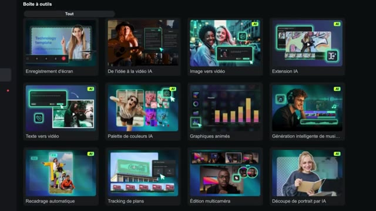
🔍 Agrandir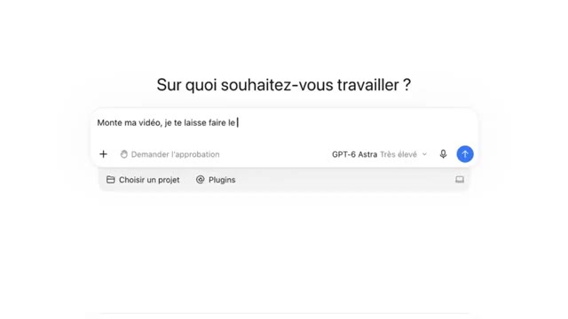
🔍 AgrandirOn va comparer le temps, la qualité, le coût aussi et à la fin tu découvriras quelle version de l'introduction tu es en train de regarder. Petit spoiler, j'ai sélectionné la meilleure. Dans un premier temps, il faut savoir qu'on fait cette vidéo en utilisant le logiciel de montage Wondershare Filmora, car au-delà du fait que la vidéo soit sponsorisée, c'est un logiciel de confiance qu'on a l'habitude de présenter sur la chaîne et qui est parfait pour les créateurs de contenu, qu'ils soient du niveau débutant à expérimenter.
Interface & Outils : Logiciel de montage vidéo Wondershare Filmora
Contenu textuel & Code : Tableau de bord d'accueil, options de création de projet, outils IA (texte vers vidéo, sous-titres, amélioration vidéo) et liste des projets locaux.
Action / Démonstration : Présentation du logiciel utilisé pour réaliser la vidéo et exploration de l'interface d'accueil.
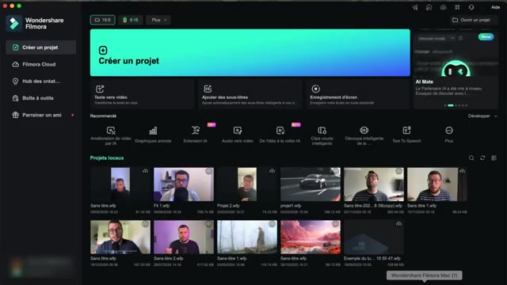
🔍 Agrandir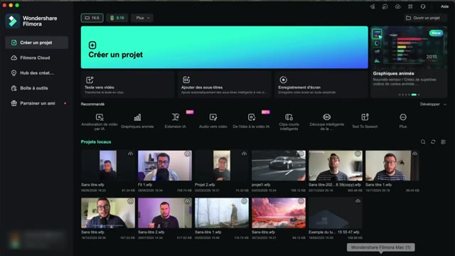
🔍 Agrandirexpérimenté. Le logiciel, au-delà d'être un éditeur complet, permet aussi d'avoir à disposition des outils IA pour son montage. On va le voir d'ailleurs dans l'exemple. Et il est téléchargeable et essayable gratuitement. Par contre, si on veut télécharger notre projet sans Watermark, il faudra choisir parmi les abonnements proposés. Donc en ce moment, il y a une offre de réduction.
Interface & Outils : Navigateur web affichant le site officiel de Wondershare Filmora (page d'achat/tarifs).
Contenu textuel & Code : "Choisissez votre formule Filmora", "OFFRE SPÉCIALE : JUSQU'À -20 %", "Plan Premium - Annuel (7,5 €/mois)", "Plan Perpétuel (79,99 €)".
Action / Démonstration : Présentation des différentes formules tarifaires du logiciel pour enlever le filigrane (Watermark).
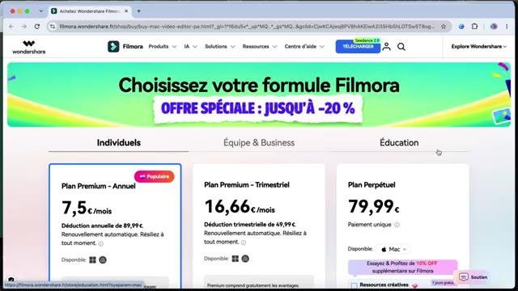
🔍 Agrandir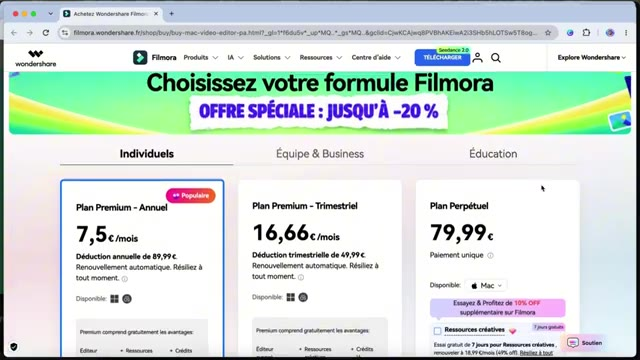
🔍 Agrandir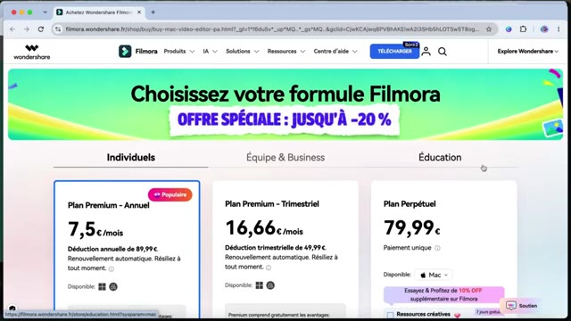
🔍 AgrandirEt ensuite, à toi de parcourir le type d'abonnement qui t'irait le mieux. Tu as des forfaits en annuel, en trimestriel ou en perpétuel avec l'ensemble des fonctionnalités en détail qui est indiqué sur chaque abonnement. Ensuite une fois le téléchargement et l'installation fait, tu vas pouvoir créer ton nouveau projet ou pourquoi pas parcourir la boîte à outils qui te permet de voir en détail l'ensemble des fonctionnalités disponibles sur Filmora.
Interface & Outils : Navigateur web (image 1) et application logicielle Wondershare Filmora (images 2 et 3).
Contenu textuel & Code : Tarifs d'abonnements, boutons d'achat, miniatures de projets récents, options de création rapide et grille d'outils IA.
Action / Démonstration : Présentation des offres tarifaires, création d'un projet et navigation dans la boîte à outils.
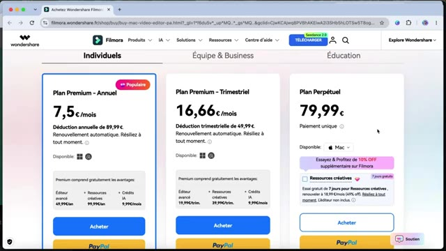
🔍 Agrandir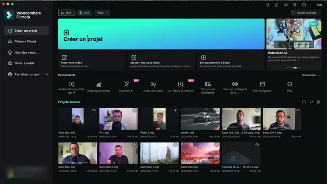
🔍 Agrandir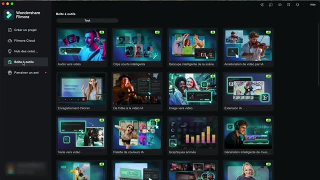
🔍 AgrandirOn verra ces outils, on peut les utiliser directement sur notre interface principale. Ici donc on va créer un nouveau projet en format 16 neuvième et la première étape ça va être d'importer nos rushs. Donc ici plutôt simple, on n'a qu'un seul rush pour notre introduction vidéo. Mais on pourrait pourquoi pas avoir des dossiers séparés avec l'ensemble des rushs, des sons et des musiques à utiliser.
Interface & Outils : Interface de logiciel de montage vidéo (type Filmora / Wondershare).
Contenu textuel & Code : Fenêtre de sélection de fichiers système macOS superposée à l'application, montrant le fichier vidéo brut 'Introduction pas montée.mp4'.
Action / Démonstration : Le créateur montre la sélection et l'importation du rush vidéo initial pour débuter le montage.
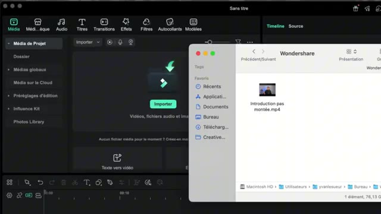
🔍 Agrandir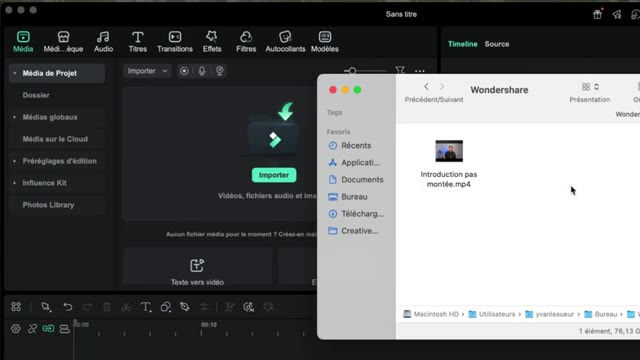
🔍 AgrandirIci on va tout simplement sélectionner notre rush et le déposer pour pouvoir l'importer dans notre bibliothèque de médias qui se trouve en haut à gauche. ensuite pour pouvoir le mettre sur notre timeline qui se trouve juste ici et commencer à effectuer le montage de notre vidéo il suffira de sélectionner et de déposer sur notre timeline à savoir que par exemple si on a plusieurs rushs on pourra en allant ici dans le petit moins réduire notre timeline pour pouvoir avoir une vue d'ensemble supplémentaire et organiser ainsi les rushs les uns après les autres
Interface & Outils : Logiciel de montage vidéo (type Wondershare Filmora).
Contenu textuel & Code : Bibliothèque de médias, panneau de prévisualisation, timeline avec pistes vidéo et audio.
Action / Démonstration : Importation d'un rush dans la bibliothèque de médias puis glisser-déposer sur la timeline.
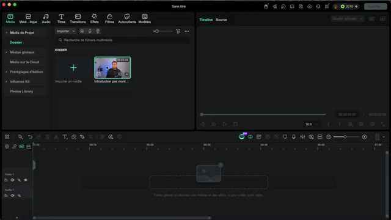
🔍 Agrandir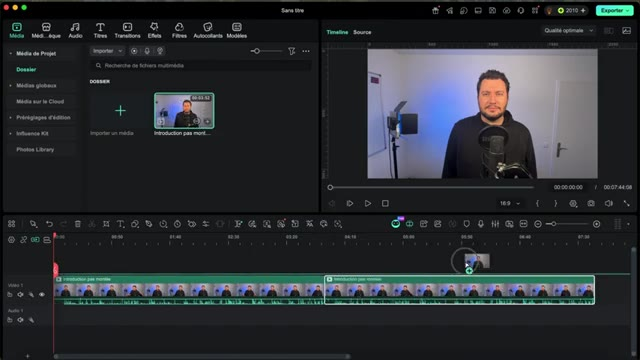
🔍 Agrandiret bien sûr on pourra aussi si on souhaite superposer des rushs Sachant qu'on montage, la règle c'est que le rush qui se trouvera sur la ligne supérieure sera celui qui sera disponible à l'écran. Ici d'ailleurs, on a notre retour écran pour pouvoir vérifier l'ensemble des actions qu'on fait et que tout s'est bien passé avant de télécharger notre projet.
Interface & Outils : Présentation orale ou séquence sans interface partagée.
Contenu textuel & Code : Explications et conseils de création de contenu / IA.
Action / Démonstration : Démonstration et mise en contexte pratique.
En dessous, on a aussi les pistes audio. Donc là, ma piste audio est collée à celle de ma vidéo. Mais par exemple, si je vais sur clic droit et que je fais détacher l'audio, on verra ma piste audio séparée de ma piste vidéo. Mais là je vais les garder ensemble et on va commencer par la première étape du montage qui va être de supprimer tout ce qui va être blanc et répétition.
Interface & Outils : Présentation orale ou séquence sans interface partagée.
Contenu textuel & Code : Explications et conseils de création de contenu / IA.
Action / Démonstration : Démonstration et mise en contexte pratique.
Puisque là la vidéo introduction fait en brut 3 minutes 52 mais il y a des fautes et des répétitions. On va les retirer ensemble. Donc pour cela le moyen le plus classique c'est de se balader sur sa timeline et entre deux espaces faire deux coupes. C'est à dire en sélectionnant par exemple ici la fin de ma première phrase.
Interface & Outils : Présentation orale ou séquence sans interface partagée.
Contenu textuel & Code : Explications et conseils de création de contenu / IA.
Action / Démonstration : Démonstration et mise en contexte pratique.
je vais aller dans le petit ciseau ici qui va me permettre de fractionner sur cette timeline et d'aller chercher juste avant le début de ma seconde phrase l'option fractionner que je peux activer avec le raccourci commande B il peut être différent si vous êtes sur PC vous aurez l'indication des raccourcis qui se fait à chaque outil pour pouvoir supprimer ainsi c'est le B à bas du montage mais ça peut être un peu fastidieux c'est pour ça que j'ai la possibilité en sélectionnant ma séquence de faire un clic droit pour aller chercher dans outils d'édition d'intelligence
Interface & Outils : Logiciel de montage vidéo (type Wondershare Filmora).
Contenu textuel & Code : Menus d'édition, timeline vidéo/audio, icônes d'outils, infobulle de raccourci clavier 'Fractionner'.
Action / Démonstration : Le créateur survole et sélectionne l'outil de fractionnement pour couper un clip sur la timeline, puis explore les menus contextuels.
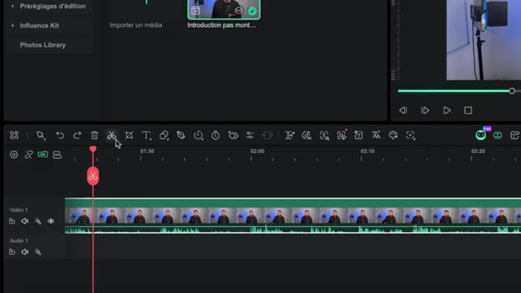
🔍 Agrandir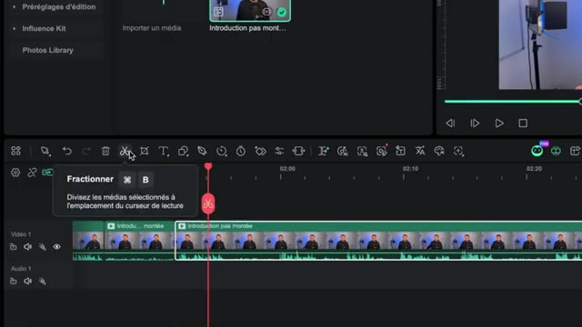
🔍 Agrandir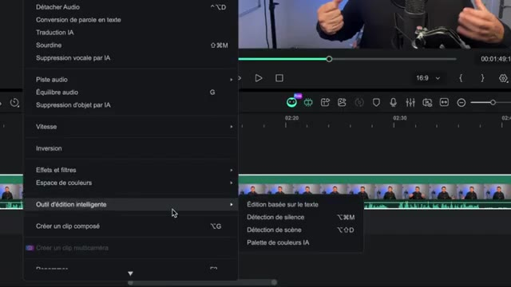
🔍 Agrandirle raccourci détection des silences. Je peux même l'afficher dans mes petits raccourcis qui est juste ici en allant ici dans le petit bouton personnaliser et en ajoutant la détection de silence où je souhaite dans ma barre d'outils. Ainsi je pourrais sélectionner cette détection des silences, définir le seuil de volume, la durée minimum et la zone de buffer pour ainsi analyser et avoir une découpe précise des moments de silence pour pouvoir terminer et d'avoir ainsi ma séquence qui a été coupée automatique entre deux silences.
Interface & Outils : Logiciel de montage vidéo (Wondershare Filmora).
Contenu textuel & Code : Menus de détection de silences, curseurs de réglages (seuil du volume, durée minimum, zone buffer) et timeline audio/vidéo.
Action / Démonstration : Le créateur montre comment configurer et utiliser l'outil de détection des silences dans son logiciel de montage.
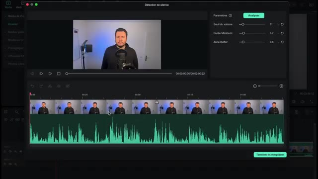
🔍 Agrandir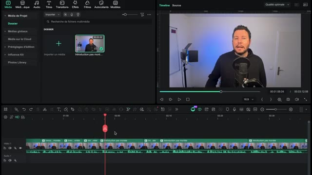
🔍 AgrandirAutre option encore plus précise je trouve, on va faire retour en arrière. C'est cette fois-ci toujours en sélectionnant notre séquence et en allant dans clic droit aller chercher l'outil d'édition basé sur le texte. Ici, en fait, la voix est détectée et tout le texte va être retranscrit pour pouvoir ainsi décider de ce qu'on coupe.
Interface & Outils : DaVinci Resolve
Contenu textuel & Code : Fenêtre d'édition basée sur le texte avec transcription de la voix, lecteur vidéo à gauche et timeline en bas.
Action / Démonstration : Le créateur montre comment utiliser l'édition basée sur le texte pour sélectionner et couper des séquences vidéo.
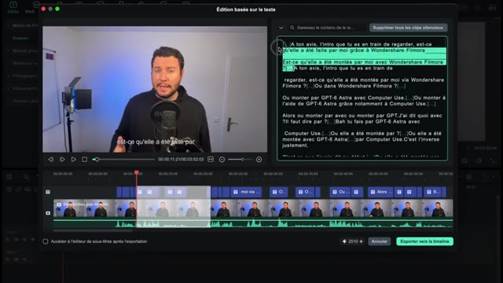
🔍 AgrandirPar exemple, ici, la première répétition, l'erreur qui est juste ici. Et une fois donc que notre texte est bon, on peut aussi supprimer tous les clips silencieux pour avoir un montage encore plus précis et l'exporter sur notre timeline pour ainsi avoir celui qui est prêt. Même avec les sous-titres qui sont déjà appliqués, si tu veux, tu peux les supprimer pour avoir seulement ton montage prêt à l'emploi.
Interface & Outils : Logiciel de montage vidéo (Wondershare Filmora).
Contenu textuel & Code : Menus Média, Titres, Transitions, Effets, Filtres, dossiers de médias et timeline avec pistes vidéo et audio.
Action / Démonstration : Le créateur montre l'interface du logiciel de montage après avoir exporté le projet avec les sous-titres et les coupes.
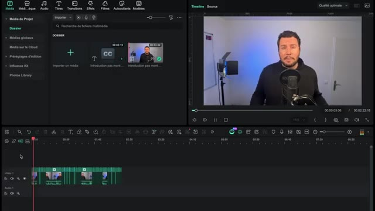
🔍 AgrandirDonc ça, ça sera pour tout ce qui va être édition de base. Et si on refait l'exercice en chronomètre, en montage manuel, ça nous prendra entre 10 et 12 minutes. En détection des silences, ça nous prendra entre 5 et 10 minutes, puisqu'il faudra quand même supprimer les répétitions. Et avec l'édition par le texte, ici, ça nous prendra 5 minutes.
Interface & Outils : Présentation orale ou séquence sans interface partagée.
Contenu textuel & Code : Explications et conseils de création de contenu / IA.
Action / Démonstration : Démonstration et mise en contexte pratique.
Mais ça, c'est vraiment le basique et j'aimerais aller un petit peu plus loin pour faire en sorte que cette introduction, elle soit un petit peu plus habillée. Et ce que je vais faire dans un premier temps, c'est que je vais sélectionner l'ensemble de mes plans, faire un clic droit et je vais créer un clip composé. Cette méthode me permettra maintenant d'avoir un seul bloc que je vais pouvoir retravailler de façon très simple et déjà où il n'y a plus les blancs, les silences et les répétitions.
Interface & Outils : Filmora (ou logiciel de montage équivalent)
Contenu textuel & Code : Boîte de dialogue "Créer un clip composé" avec le champ "Clip composé 1", ratio d'aspect 16:9, résolution 1920x1080 (Full HD), et boutons OK / Annuler.
Action / Démonstration : Le créateur nomme et valide la création d'un clip composé pour regrouper plusieurs plans de la timeline.
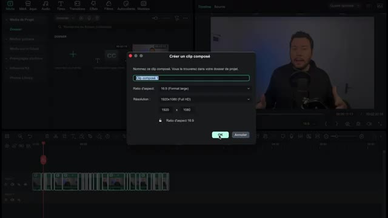
🔍 AgrandirDonc j'ai maintenant mon clip composé et pour améliorer ma vidéo, la première chose que je vais faire, c'est que je vais changer le décor qui est un petit peu triste ici. Et pour cela, pas besoin de sortir de Wondershare Filmora. Je peux, en allant dans Mediatek, sélectionner dans Media IA l'option Image IA.
Interface & Outils : Logiciel de montage vidéo Wondershare Filmora.
Contenu textuel & Code : Menus de l'application, timeline principale, fenêtre d'aperçu vidéo, options de Média IA (Inspiration vidéo, Image vers vidéo, Texte vers vidéo, Image IA).
Action / Démonstration : Le créateur montre son projet de montage et navigue dans les options de l'intelligence artificielle pour modifier le décor.
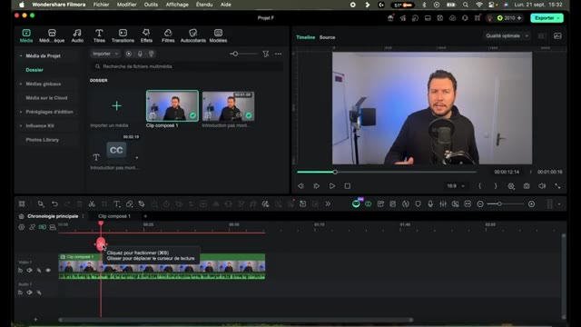
🔍 Agrandir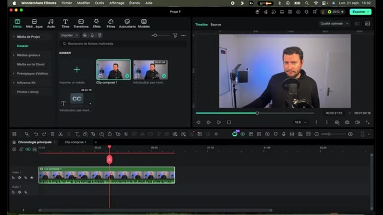
🔍 Agrandir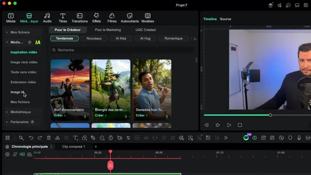
🔍 AgrandirPour pouvoir, ici, en utilisant le modèle que je souhaite, donc moi, par exemple ici, je vais prendre Nano Banana Pro. Pourquoi pas, ici, je vais mettre le logo du Labo des Réseaux. Et j'ai travaillé ici un prompt complet. Je vais sélectionner la qualité, le format et générer avec l'IA. J'en ai d'ailleurs généré un petit peu plus pour avoir plus de choix.
Interface & Outils : Logiciel de montage vidéo (type Wondershare Filmora) avec module IA intégré.
Contenu textuel & Code : Modèle IA 'Nano Banana Pro', prompt en anglais pour générer un arrière-plan de studio YouTube avec un mur en bois et des plantes, et un aperçu vidéo avec la mention 'Generated by AI'.
Action / Démonstration : Le créateur présente l'utilisation du générateur d'image par IA intégré au logiciel de montage pour créer des visuels ou décors personnalisés.
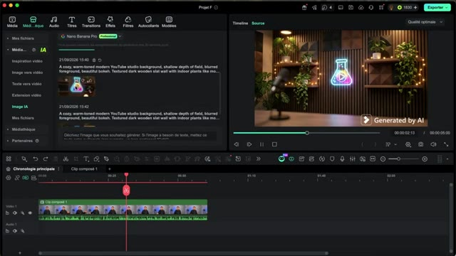
🔍 AgrandirEt je pense que je vais sélectionner celle-ci. En la faisant glisser sur ma timeline, en la faisant correspondre à mon image, je vais me mettre par-dessus. Et sur ma vidéo, je vais sélectionner une option qu'on trouvera ici dans nos raccourcis pour pouvoir faire un découpage portrait de l'IA.
Interface & Outils : Logiciel de montage vidéo (type Wondershare Filmora).
Contenu textuel & Code : Menus d'édition, timeline chronologique, options rapides incluant "Fond vert" et "Découpe de portrait par IA".
Action / Démonstration : Le créateur positionne un clip sur sa timeline et sélectionne l'outil de découpe de portrait par intelligence artificielle pour détourer son sujet.
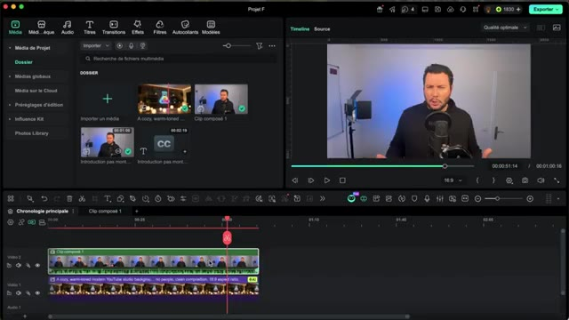
🔍 Agrandir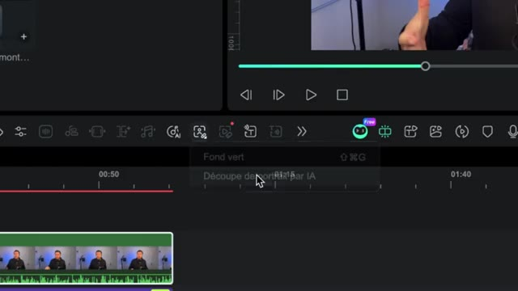
🔍 AgrandirEt ainsi, ici, avoir notre arrière-plan qui s'affiche. alors ici je trouve que ça fonctionne pas trop donc je vais refaire une génération avec l'IA et faire en sorte de mettre le logo sur un côté voilà là on a quelque chose de vraiment sympa donc on voit je suis parfaitement découpé dans ce nouveau décor et cet arrière-plan maintenant je vais le sélectionner et je vais aller dans effet je vais rechercher flou derrière plan et je vais sélectionner là par exemple un flou de profondeur que je vais ajouter à mon arrière-plan je pourrais même en allant ici dans la petite icône régler l'intensité
Interface & Outils : Interface du logiciel de montage vidéo Wondershare Filmora sur macOS.
Contenu textuel & Code : Menus de "Mise en forme IA", options de "Découpe de portrait par IA", timeline avec pistes vidéo, et panneau d'effets (flou de profondeur).
Action / Démonstration : Le créateur ajuste le détourage du sujet, intègre un arrière-plan généré par IA et applique un effet de profondeur de champ.
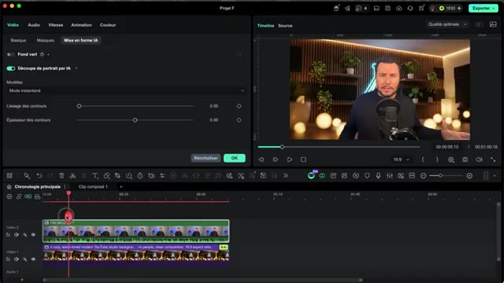
🔍 Agrandir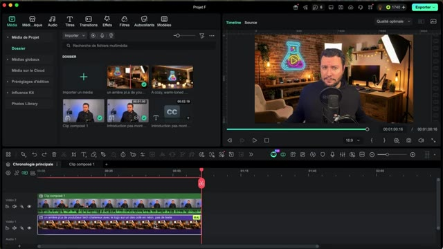
🔍 Agrandir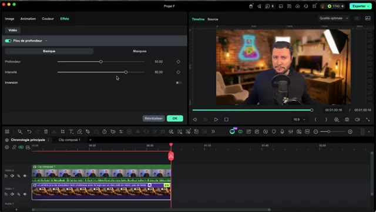
🔍 Agrandirpour réduire la profondeur mais aussi réduire l'intensité pour avoir ce petit effet là et donner de la crédibilité. Ce que je peux faire maintenant aussi c'est travailler la lumière avec un nouvel outil IA, super. Donc pour le trouver facilement je te conseille ici d'aller dans affichage et de passer en mode d'affichage par défaut.
Interface & Outils : Logiciel de montage vidéo (Wondershare Filmora)
Contenu textuel & Code : Menu déroulant Affichage, option Mode d'affichage, sous-menu avec les choix Défaut, Organiser, Timeline, Courte vidéo, Classique.
Action / Démonstration : Le créateur montre comment changer le mode d'affichage de l'interface pour retrouver la disposition par défaut.
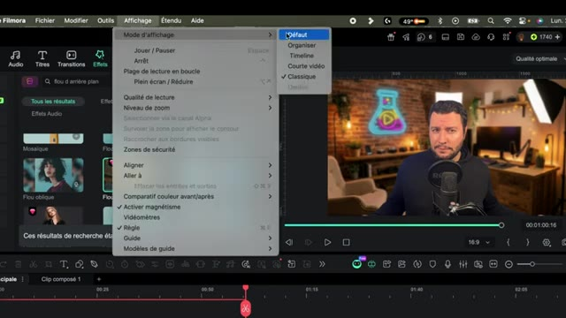
🔍 AgrandirJe vais aller ici dans vidéo et dans basique je vais descendre jusqu'à arriver à l'option amélioration automatique automatique que je vais cocher et ainsi les lumières et les couleurs ont été ajustées pour pouvoir faire ressortir le personnage principal. D'ailleurs si je souhaitais moi-même les régler je pourrais aller ici dans couleurs et changer ainsi la température, la teinte, la vibrance ou la saturation comme je le souhaite.
Interface & Outils : Logiciel de montage vidéo (type CapCut desktop)
Contenu textuel & Code : Menus Vidéo, Basique, Amélioration automatique, Couleur, curseurs de saturation et de lumière
Action / Démonstration : Navigation dans les menus de réglage vidéo et activation de l'amélioration automatique, puis passage aux réglages de couleur manuels.
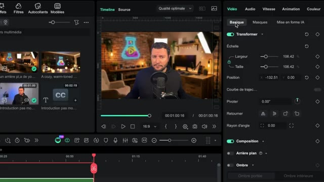
🔍 Agrandir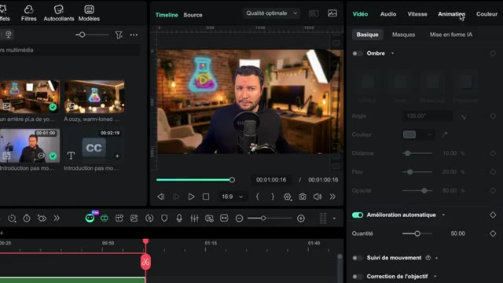
🔍 Agrandir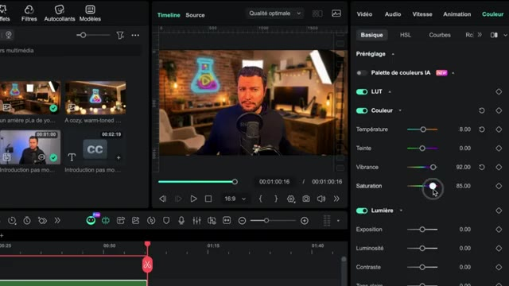
🔍 AgrandirIci on va laisser l'IA faire son travail. Donc on est plutôt pas mal, ce qui manque maintenant c'est ajouter des plans de coupe ou des plans d'illustration selon nos propos. Donc ici dans un premier temps j'ai déterminé les coupes et je vais ici ajouter mes plans d'illustration que je vais générer encore une fois grâce à la fonctionnalité Mediatek et les médias IA dans Filmora.
Interface & Outils : Logiciel de montage vidéo (type Wondershare Filmora ou similaire) avec panneau Mediatek / IA et timeline.
Contenu textuel & Code : Timeline de montage avec clips vidéo et pistes audio, panneau de prévisualisation, et section de génération d'images IA avec prompts.
Action / Démonstration : Le créateur montre comment il organise ses plans de coupe et génère des illustrations visuelles à l'aide des fonctionnalités d'IA du logiciel.
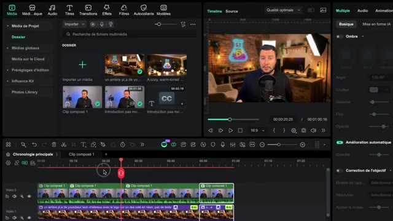
🔍 Agrandir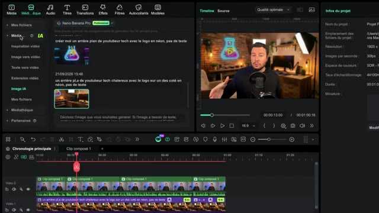
🔍 AgrandirDonc j'ai la possibilité d'utiliser des templates, de faire de l'image tout vidéo si j'ai déjà des images de base, de faire du texte tout vidéo. C'est ici ce que je vais faire en marquant une fois le prompt qui va illustrer ma séquence vidéo et en sélectionnant parmi les modèles disponibles. Donc Donc on a le modèle Happy Horse, le modèle Filmora, le modèle Seed Dance 2.0 ou Top Movie 2.5 ou encore VIO 3.1.
Interface & Outils : Présentation orale ou séquence sans interface partagée.
Contenu textuel & Code : Explications et conseils de création de contenu / IA.
Action / Démonstration : Démonstration et mise en contexte pratique.
Ici on va prendre le modèle Seed Dance 2.0 et on va marquer notre prompt. Ici j'ai rédigé mon prompt complet, je vais pouvoir générer ma vidéo. Ma vidéo est prête, je vais pouvoir ici la glisser sur ma timeline et me remplacer. Et maintenant ce que je peux faire pour ajouter un peu de rythme, c'est pourquoi pas en ajoutant par exemple des effets zoom, des filtres supplémentaires on a aussi toute une bibliothèque de transitions à disposition on a des transitions IA mais aussi toutes les transitions classiques et à la fin ce que j'aime bien faire surtout quand on travaille sur les formats verticaux
Interface & Outils : Logiciel de montage vidéo (type Wondershare Filmora)
Contenu textuel & Code : Menus Média, Audio, Titres, Transitions, Effets, chronologie principale et prévisualisation vidéo.
Action / Démonstration : Le créateur montre comment importer un clip généré par IA dans sa bibliothèque de médias et l'ajouter à la timeline de montage.
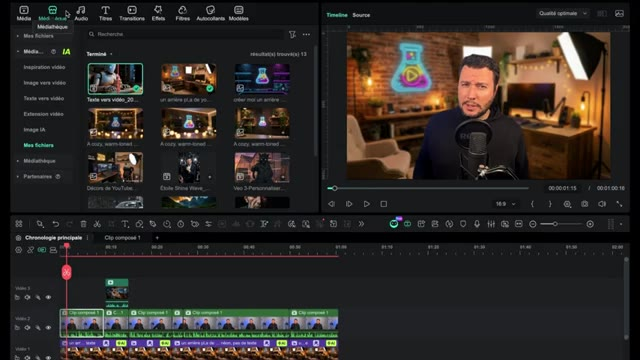
🔍 Agrandir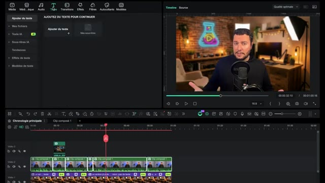
🔍 Agrandirc'est d'aller dans l'option titre pour sélectionner les sous-titres créés avec l'IA et générer automatiquement les sous-titres sur sa timeline à partir de la voix pour les avoir qui s'affiche sur ton écran et ce que je vais faire c'est que je vais continuer à ajouter du rythme en mettant les logos de ChatGPT et de Filmora quand je parle d'eux.
Interface & Outils : Filmora (logiciel de montage vidéo)
Contenu textuel & Code : Timeline de montage avec des clips, médias importés incluant les logos de ChatGPT et Filmora, panneau de configuration vidéo à droite.
Action / Démonstration : Le créateur montre son écran de montage pour illustrer l'ajout de logos et d'éléments dynamiques sur la timeline.
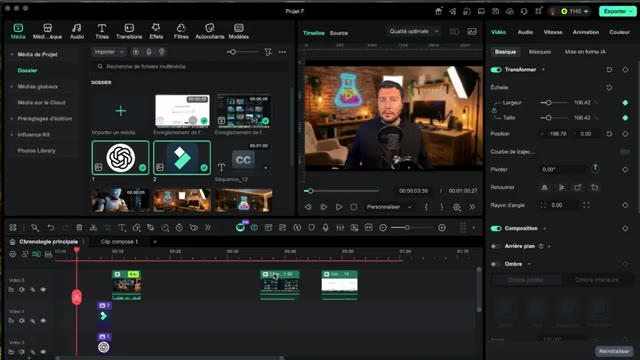
🔍 AgrandirJe vais aussi me servir des keyframes pour pouvoir faire des accélérations sur les zooms à certains moments de la vidéo. Et ensuite, et avant d'exporter, je choisirai une musique libre de droit pour pouvoir l'ajouter. Ainsi, j'ai mon introduction prête. A voir maintenant si c'est celle-ci que je vais utiliser.
Interface & Outils : Présentation orale ou séquence sans interface partagée.
Contenu textuel & Code : Explications et conseils de création de contenu / IA.
Action / Démonstration : Démonstration et mise en contexte pratique.
On va passer au test avec ChatGPT Astra et on commence par lancer le chrono. Depuis l'application ChatGPT dans Codex, je sélectionne le modèle Astra. Je l'utilise en mode léger parce que j'ai peur d'atteindre vite les limites de mon abonnement. Et je lui demande sur mon bureau, dans le dossier Wondershare, trouve le fichier vidéo introduction pas monté, ouvre le logiciel de montage Filmora et édite la vidéo, fais en sorte de supprimer les blancs et les répétitions et de rendre l'ensemble dynamique.
Interface & Outils : Application Codex, interface de ChatGPT Astra
Contenu textuel & Code : Prompt : "Sur mon bureau, dans le dossier Wondershare, trouve le fichier vidéo 'Introduction pas montée', ouvre le logiciel de montage Filmora et édite la vidéo..." ; modèle sélectionné : "GPT-6 Astra Léger"
Action / Démonstration : Le créateur envoie le prompt à l'agent IA ChatGPT Astra pour tester ses capacités d'automatisation des tâches sur ordinateur.
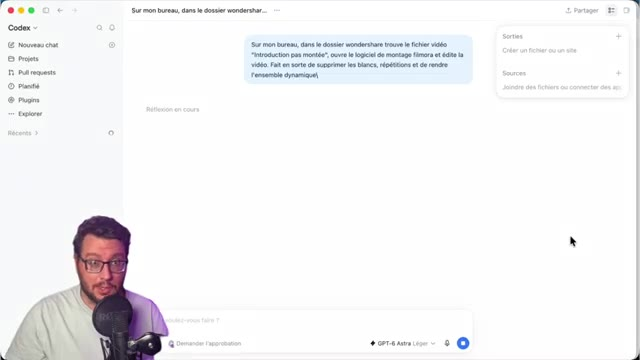
🔍 Agrandir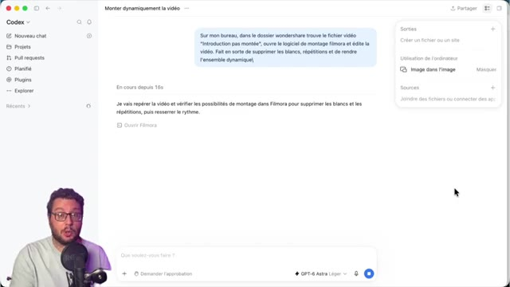
🔍 AgrandirJe précise qu'en amont, j'ai créé un dossier sur le bureau de mon ordinateur avec le rush non monté à l'intérieur. Donc voilà, Astra est parti. Plusieurs choses à noter pendant ce test. D'abord, j'ai dû régulièrement autoriser Astra à effectuer des actions. Sauvegarde, exportation, surtout en début de projet, difficile de s'éloigner de son PC.
Interface & Outils : Finder (macOS)
Contenu textuel & Code : Un dossier 'Wondershare' contenant un fichier vidéo 'montée.mp4' et un fichier 'Introduction.pas'.
Action / Démonstration : Le créateur montre le dossier contenant le rush non monté préparé sur son bureau avant de lancer le test.
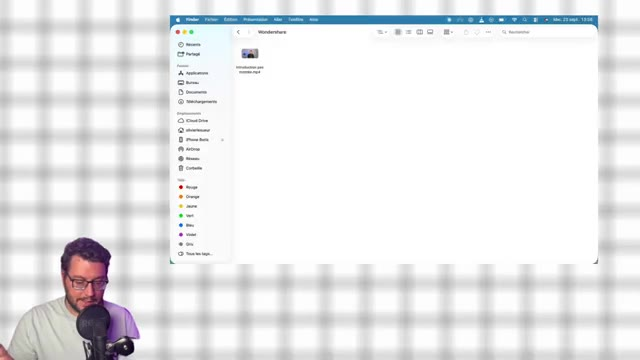
🔍 AgrandirEnsuite, le plus gros souci, c'est mon abonnement ChatGPT+, qui limite mon utilisation d'Astra. Tu peux le voir d'ailleurs à plusieurs reprises. J'ai dû attendre que mes crédits d'utilisation se réinitialisent. Bien sûr, il est possible d'acheter des crédits supplémentaires, mais quand on paie déjà un abonnement de chat GPT+, c'est un peu embêtant. J'ai quand même réussi en plusieurs sessions à faire en sorte qu'Astra boucle la première partie du projet.
Interface & Outils : Codex (interface agentique), Wondershare Filmora.
Contenu textuel & Code : Prompts de pilotage automatique, messages d'erreur de quota d'utilisation, transcriptions textuelles de la vidéo.
Action / Démonstration : Le créateur montre l'automatisation du montage par l'IA et illustre la limite de quota atteinte sur son abonnement.
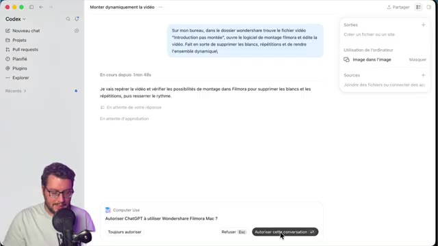
🔍 Agrandir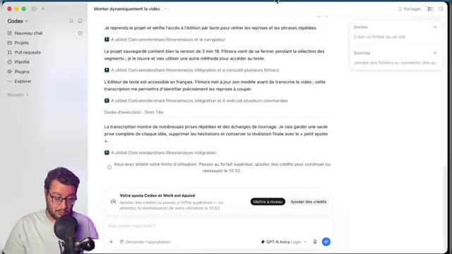
🔍 Agrandir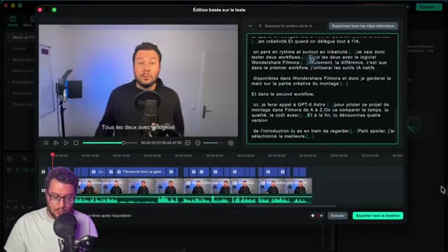
🔍 AgrandirJ'ai abandonné la partie dynamique et je me suis arrêté à la première mission. Supprimer les blancs et les répétitions. Ça a pris donc 24 minutes en 5 sessions différentes. Et voilà le résultat. A ton avis, l'intro que tu es en train de regarder, est-ce qu'elle a été montée par moi via Wondershare Filmora ? Montée par GPT-6 Astra avec Computer Use.
Interface & Outils : Logiciel de montage vidéo (Wondershare Filmora / Édition basée sur le texte)
Contenu textuel & Code : Timeline de montage, transcription textuelle, lecteur vidéo intégré et options d'exportation.
Action / Démonstration : Le créateur explique son processus de montage et compare différentes méthodes de réalisation.
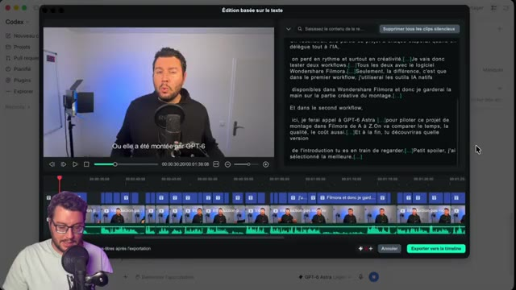
🔍 Agrandirgénérer un script préparer ses médias générer ses sous titres avec l'IA ça n'a rien de compliqué mais il est ailleurs il a réussi seul à utiliser plusieurs fonctionnalités de film aura pour éditer la vidéo et ça c'est déjà un vrai résultat mais on est loin du montage abouti pour être tout à fait honnête je pense que j'aurais obtenu un meilleur résultat en critiquant son travail et en lui demandant des corrections.
Interface & Outils : AUCUNE
Contenu textuel & Code : AUCUNE
Action / Démonstration : Le créateur parle face caméra pour commenter le travail réalisé.
Mon prompt manquait peut-être aussi d'orientation et j'ai travaillé sur la version légère du modèle. Il faudrait donc refaire le test peut-être en mode moyen au maximum. Seulement, ça coûtera beaucoup plus de crédit. Et je n'ai pas envie forcément de dépenser 200 euros pour montrer l'introduction d'une minute de ma vidéo. Et donc, c'est là ma principale critique.
Interface & Outils : Studio virtuel / Wondershare Filmora (graphismes d'illustration)
Contenu textuel & Code : Textes : "IMPRESSIONNANT, MAIS INACHEVÉ" et "200 € POUR UNE INTRO ? Mode maximum. Crédits maximum. Coût maximum."
Action / Démonstration : Le créateur commente les limites financières et techniques des modèles d'IA pour la réalisation d'une introduction.
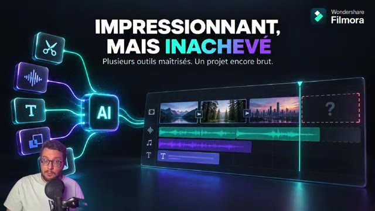
🔍 Agrandir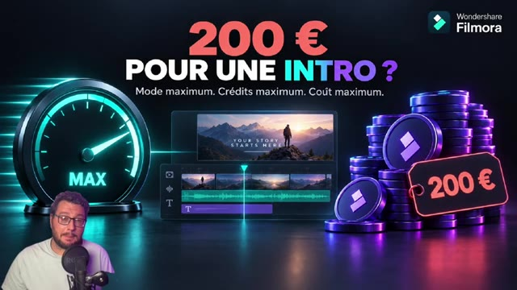
🔍 AgrandirLe montage IA, via un agent, peut paraître une solution pour gagner du temps. Mais à quel prix ? En optimisant les consignes et les travails en amont, on peut sans doute trouver un bon compromis pour rester rentable. Par exemple, demander à l'IA de travailler sur un format précis. Par contre, en la laissant en roue libre comme je l'ai fait, je doute qu'on obtienne pour l'instant un bon résultat.
Interface & Outils : Logiciel de montage vidéo Wondershare Filmora.
Contenu textuel & Code : Textes explicatifs, illustrations de flux de travail IA, timeline de montage et icônes d'avertissement.
Action / Démonstration : Le créateur présente les avantages de cadrer l'IA par rapport au risque de la laisser en roue libre.
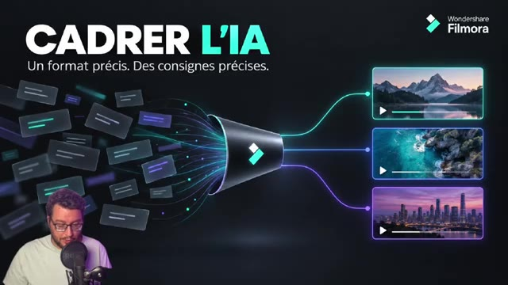
🔍 AgrandirEt côté créativité, quand j'ai travaillé moi-même sur mes rushs, je ne sais pas si tu te rappelles, comme par exemple avec l'image derrière plan IA, j'ai changé 3 ou 4 fois de direction avant de savoir ce que je voulais vraiment. car je trouve que c'est en s'impliquant dans son projet qu'on obtient finalement la vision finale de celui-ci. Je doute que j'aurais réussi à formuler cette vision dans un prompt sans avoir d'abord travaillé mes rushs moi-même.
Interface & Outils : Wondershare Filmora
Contenu textuel & Code : Timeline de montage vidéo, pistes audio et vidéo, curseur de lecture, et visuels thématiques liés au processus créatif ("La vision se trouve en créant").
Action / Démonstration : Présentation du processus de montage et de la flexibilité créative lors du travail sur les rushs vidéo.
Au final, je préfère un logiciel qui intègre des outils IA pour faciliter ton workflow, ce qui permet de co-créer et de garder le contrôle créatif sur ce que tu fais. Et pour ça, Filmora répond bien aux besoins. Des outils IA et la liberté de créativité, c'est ce qu'on demande en tant que créateur. Et si tu veux tester de ton côté Filmora, je te rappelle que le lien pour le télécharger et l'installer gratuitement est en description et en commentaire épinglé.
Interface & Outils : Logiciel Wondershare Filmora et site web officiel de Filmora.
Contenu textuel & Code : Timeline de montage vidéo, boutons "Commencez gratuitement" et "Acheter", mentions "Filmora 15", "Montez comme un expert avec Filmora IA".
Action / Démonstration : Le créateur présente l'interface de montage de Filmora puis redirige l'audience vers la page d'accueil officielle du logiciel pour le tester.
Merci d'avoir suivi ce tuto et je te dis à très bientôt sur le Labo des Réseaux pour une nouvelle vidéo.
Interface & Outils : Site web Wondershare Filmora
Contenu textuel & Code : Texte "Filmora 15 - Montez comme un expert avec Filmora IA", boutons "Commencez gratuitement" et "Acheter"
Action / Démonstration : Le présentateur conclut la vidéo en affichant la page officielle du logiciel Filmora 15.